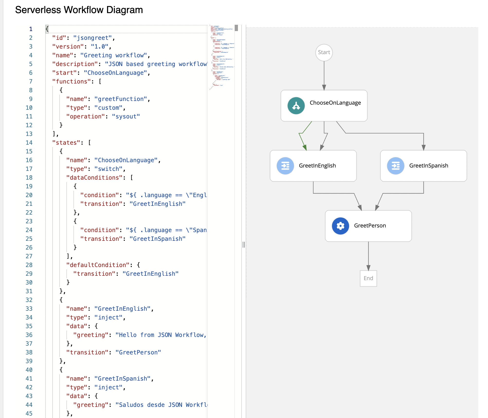
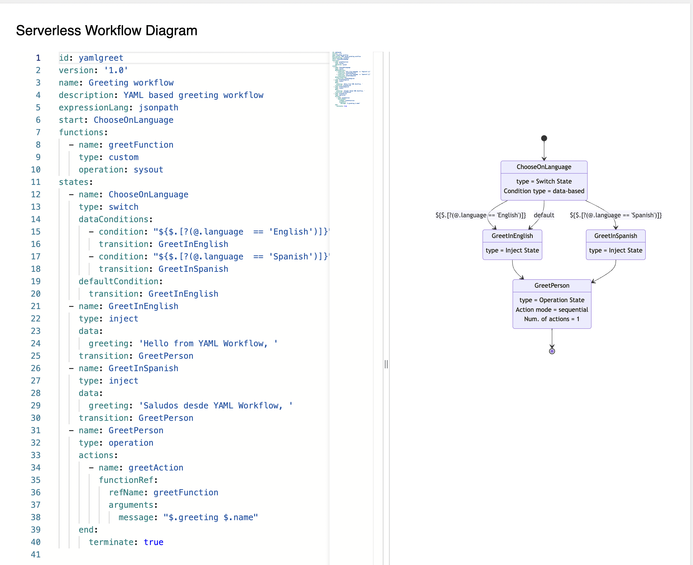

Workflow Instances in Kogito Serverless Workflow Tools extension
In Kogito Serverless Workflow Tools, the Workflow Instances page is used to monitor and manage the available instances. The Workflow Instances page displays a list of available instances and add filters to the list.
To create a workflow instance, you can use the Workflow Definitions page. For more information, see Workflow Definitions in Kogito Serverless Workflow Tools extension.
When you create a workflow instance, the instance appears in the workflow instances table on the page, containing the following details:
-
Id: Displays the name and business key of an instance. Also, when you hover on the name of the workflow instance, a unique ID is displayed for the instance. You can click on the ID to navigate to the Workflow Details page.
-
Status: Displays the current state of the instance. This column can contain Active, Completed, Aborted, Error, and Suspended as values.
-
Created: Displays the time reference indicating when the instance is created.
-
Last Update: Displays the time reference indicating when the instance is last updated.
You can also sort the columns of the workflow instances table.
On the Workflow Instances page, you can filter the list of workflow instances based on the states and business keys. By default, Active, Completed, Aborted, Error, and Suspended are applied on the list. You can use the Status drop-down to see the available states. To filter the workflow instances based on the states, select or unselect the states in the Status drop-down and click Apply filter button.
To filter the workflow instances based on business keys, enter a business key in the Filter by business key field and click Apply filter button.
To fetch the newly added workflow instances, click on the refresh icon next to the Apply Filter button. Also, to clear the applied filters and reset to the default state, click Reset to default button.
In the workflow instances table, the Id column contains a clickable link, which enables you to navigate to the Workflow Details page. The Workflow Details page contains various panels, providing detailed information about a workflow instance.

The Workflow Details page consists of the following panels:
-
Serverless Workflow Diagram panel
-
Timeline panel
-
Details panel
-
Variables panel
- Serverless Workflow Diagram panel
-
The Serverless Workflow Diagram panel enables you to explore the workflow diagram and execution path of the workflow instance. The workflow diagram and execution path are displayed by consuming the source which is exposed through the
kogito-addons-quarkus-source-files.To add the source files add-on configuration, add the following dependency to
pom.xmlfile of your project:source-files add-on dependency inpom.xmlfile<dependency> <groupId>org.kie.kogito</groupId> <artifactId>kogito-addons-quarkus-source-files</artifactId> </dependency>There are two ways to display the diagram.
-
Stunner Diagram
-
Mermaid Diagram
By default, the Stunner diagram is displayed. To toggle between the two diagrams you can use the
kogito.swf.stunner.enabled(defaulted to true) environment variable in your application properties.For yaml-based workflow files, the mermaid diagram is displayed instead of the stunner diagram.
There is a slider available in the diagram panel, which when dragged to the right displays the source code in read-only mode.
Figure 5. Stunner based Diagram panelFigure 6. Mermaid based Diagram panel -
- Timeline panel
-
The Timeline panel displays the list of nodes that are related to a workflow instance. Each node in the Timeline panel consists of an icon, indicating the state of the node, such as Active, Completed, or Error.
 Figure 7. Timeline panel
Figure 7. Timeline panel - Details panel
-
The Details panel displays the basic information related to a workflow instance, including:
-
Name: Name of the workflow instance.
-
Business key: Business key related to the workflow instance.
-
State: Current state of the workflow instance.
-
Id: Unique ID of the workflow instance.
-
Start: Time reference indicating when the workflow instance is started.
-
Last Updated: Time reference indicating when the workflow instance is last updated.
-
End: Time reference indicating when the workflow instance is completed.
 Figure 8. Details panel
Figure 8. Details panel -
- Variables panel
-
The Variables panel displays the data of a workflow in the form of JSON.
 Figure 9. Variables panel
Figure 9. Variables panel
Found an issue?
If you find an issue or any misleading information, please feel free to report it here. We really appreciate it!